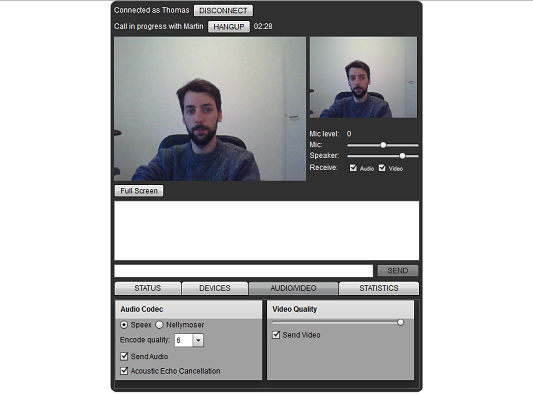
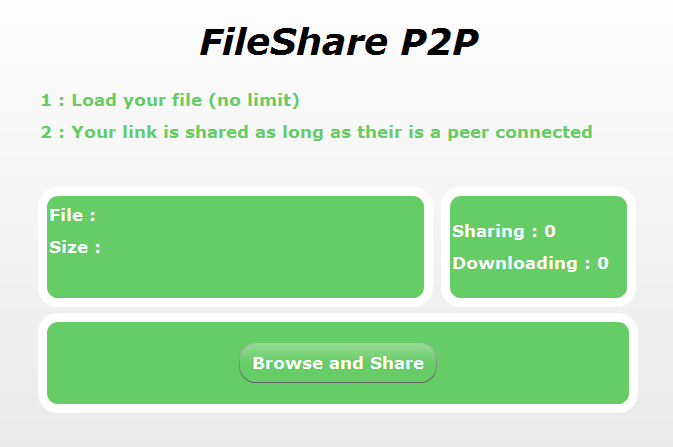
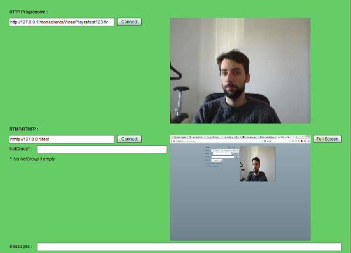

Quick Start
Quick Start FAQ
FAQ Services
Services Roadmap
Roadmap Documentation
DocumentationSamples¶
All these samples are freely hosted on a Raspberry Pi to give you a preview of what you could do with MonaServer. We don’t make benefits of these services so if you like them please promote MonaServer by clicking on our social buttons above. Furthermore you can donate ($, €) to contribute to the development of MonaServer.
The sources are availables on the MonaClients github page.
To get more informations please ask us on the MonaServer forum or send a mail to jammetthomas@gmail.com.
| Screenshot & link | Description | Technologies |
|---|---|---|
 |
The simpliest application of live video communication.
Notes :
|
|
|  |
This is an improved version of the Cirrus Sample Application with full-screen mode and a better default quality of video. |
|
 |
Meeting : This is the adaptation of the Adobe Meeting Sample. It is a more complex VideoConference application permitting to connect users in both RTMFP (P2P full-mesh) and RTMP (publish/play) modes. |
|
|  |
The simpliest application of P2P file sharing.
|
|
 |
Chat : A sample chat application available in :
|
|
 |
A simple video publisher working with both RTMP & RTMFP, with or without a NetGroup, allows synchronous recording! Note : asynchronous recording is a feature in the roadmap, if you need it please contact us. |
|
|  |
A simple video player working with both RTMP & RTMFP, with or without a NetGroup and with HTTP Progressive (only flv)! Note : HTTP Progressive is a new feature providing an alternative to RTMP & RTMFP, if you are interested to improve it contact us! |
|
 |
A proof of concept of an Industrial Computing interface using SVG for the view and saving data with our NoSQL Dabase system. |
|